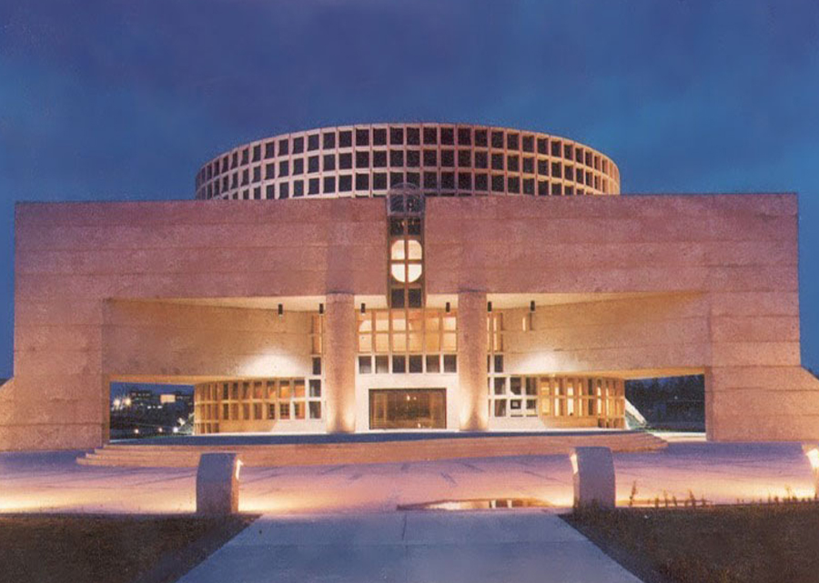

Baja California Sur
Está ubicado en el sur de la península de Baja California, su capilar más poblado es "La Paz"

Algunos museos importantes del estado de Baja California Sur son:
Museo Regional de Baja California Sur
Museo de las Misiones Jesuiticas
Museo de la Ballena
Museo de la musica
Museo ruta de playa
Pero especificamente les hablaremos de uno en especial:
MUSEO DE LA MUSICA
El Museo de la Música está ubicado en un inmueble del siglo XIX, mejor conocido como La Vieja Casona, misma que forma parte del patrimonio histórico de Baja California Sur. Los instrumentos musicales, partituras, muebles y objetos decorativos con los que cuenta el recinto datan de los siglos XVII, XVIII y XIX. La gran mayoría fue donada por la ciudadanía.
